Kapitel 2 Grundlæggende statistik i base R
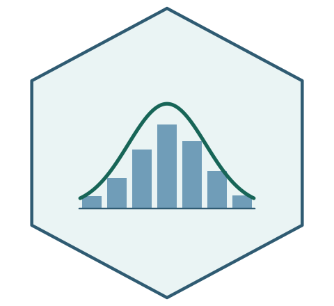
“Hellere et omtrentligt svar på det rigtige spørgsmål end et præcist svar på det forkerte.” - John Tukey
2.1 Læringsmål og videoer
I det første kapitel lærte du at gemme, undersøge og udvælge data i R. Nu bygger vi videre på dine R-færdigheder for at besvare biologiske spørgsmål ved hjælp af grundlæggende statistik. Statistik handler både om at beskrive data og om at vurdere usikkerheden i vores konklusioner.
I kurset arbejder vi praktisk med data. Undervejs øver du dig i at forklare, hvad der er målt, hvad du sammenligner, og hvilke antagelser analysen bygger på.
For at bestå kurset behøver du ikke kende alle detaljer og teorier bag de statistiske metoder. Du skal kunne bruge metoderne hensigtsmæssigt i R og fortolke resultaterne korrekt. En stærk statistisk intuition er dog en stor fordel, når du skal vælge en metode og vurdere, hvad resultaterne fortæller om dit biologiske spørgsmål.
Du får mange muligheder for at øve dig i at bruge statistik gennem hele kurset. Til eksamen spørger vi kun til metoder, der indgår i kursets øvelser, herunder workshopopgaverne.
Du skal kunne:
- beskrive og sammenligne grupper med gennemsnit, median og standardafvigelse.
- formulere en nulhypotese og forstå p-værdiens betydning og fortolkning.
- vælge en passende t-test og udføre den i base R.
- bruge en chi-i-anden-test til at undersøge sammenhængen mellem to kategoriske variabler.
2.1.1 Sådan bruger du kapitlet
Tjekliste
- Se videoerne, eller læs de tilsvarende afsnit i notaterne.
- Lav quizzen Quiz - Statistik på Absalon (problem 1).
- Arbejd med de øvrige problemstillinger i undervisningen (problem 2–8). Løsningsforslagene bliver tilgængelige på Absalon mod slutningen af undervisningen.
- Valgfrit: Vi gennemgår afsnit 2.12 om korrelation og simpel lineær regression næste undervisningsgang. Hvis du har tid, kan du kigge på afsnittet allerede nu.
2.1.2 Videoer
Videoerne er i alt cirka 44 minutter og giver et overblik over de statistiske emner. De viser idéen bag metoderne, hvordan du bruger dem i R, og hvordan du fortolker resultaterne.
I kursusnoterne kan du læse mere og finde koden til eksemplerne. I problemstillingerne arbejder du videre med emnerne.
Gennem kurset bruger vi metoderne i praksis på konkrete datasæt. Hvis noget virker svært i starten, får du flere muligheder for at vende tilbage til det og styrke din forståelse undervejs.
Video 1: Databeskrivelse: gennemsnit, median og spredning
Du beskriver plantevægte med gennemsnit, median og standardafvigelse og sammenligner grupperne i PlantGrowth.
Læs §2.2 om population og stikprøve og §2.3 om at beskrive data. Emnet går igen i problem 2 og problem 3.
Video 2: Stikprøver og standardfejl
Du ser, hvordan gennemsnittet varierer fra stikprøve til stikprøve, og beregner standardfejlen for kontrolgruppens gennemsnit.
Læs §2.4 om fordelinger og §2.5 om usikkerhed på gennemsnit, og prøv derefter problem 4a–b.
Video 3: Hvad fortæller en p-værdi?
Du sammenligner kontrolplanternes gennemsnit med en reference på 5,4 vægtenheder og bruger de to haler af en normalkurve til at forstå p-værdien.
Læs afsnittet om hypoteser og p-værdier, og prøv derefter problem 4c–d.
Video 4 del 1: T-test for ét gennemsnit
Du sammenligner kontrolplanternes gennemsnit med en fast reference. Læs afsnittet om ét gennemsnit mod en reference, og prøv derefter problem 4e.
Video 4 del 2: T-test for to uafhængige grupper
Du tester forskellen mellem to gruppers gennemsnit i R. Brug afsnittet om t-test for to uafhængige grupper til problem 5 og problem 8.
T-test til parrede målinger
Læs afsnittet om den parrede t-test, før du arbejder med problem 6.
Video 5: Chi-i-anden-test
Du undersøger, om blomsterfarve hænger sammen med antallet af kopier af en bestemt allel. Læs afsnittet om chi-i-anden-test for tabellen og koden. Brug derefter metoden på et andet datasæt i problem 7 om Titanic.
2.2 Population og stikprøve
Forestil dig, at vi vil undersøge, om planter har forskellig tørvægt under forskellige behandlinger. Vi bruger det indbyggede datasæt PlantGrowth, som indeholder 30 observationer fordelt på en kontrolgruppe og to behandlingsgrupper. Ifølge datasættets dokumentation er weight tørvægt, mens group angiver forsøgsgruppen. Dokumentationen angiver ikke vægtens måleenhed, så vi bruger betegnelsen vægtenheder frem for at antage, at det er gram.
## weight group
## 1 4.17 ctrl
## 2 5.58 ctrl
## 3 5.18 ctrl
## 4 6.11 ctrl
## 5 4.50 ctrl
## 6 4.61 ctrl## 'data.frame': 30 obs. of 2 variables:
## $ weight: num 4.17 5.58 5.18 6.11 4.5 4.61 5.17 4.53 5.33 5.14 ...
## $ group : Factor w/ 3 levels "ctrl","trt1",..: 1 1 1 1 1 1 1 1 1 1 ...En observationsenhed er det, som en observation handler om. Her behandler vi hver række som en måling af én plante. weight er en numerisk variabel: Det giver mening at beregne en gennemsnitlig vægt. group er en faktor med de tre behandlingsgrupper ctrl, trt1 og trt2.
En population er den samling af enheder, vi ønsker at udtale os om, for eksempel planter af en bestemt art dyrket under bestemte betingelser. En stikprøve er de enheder, vi faktisk har målt. Gennemsnittet af vores ti kontrolplanter beskriver netop disse planter. Når vi bruger det til at sige noget om populationens gennemsnit, kommer der usikkerhed ind i billedet: Ti andre planter ville sandsynligvis have givet et lidt andet gennemsnit.
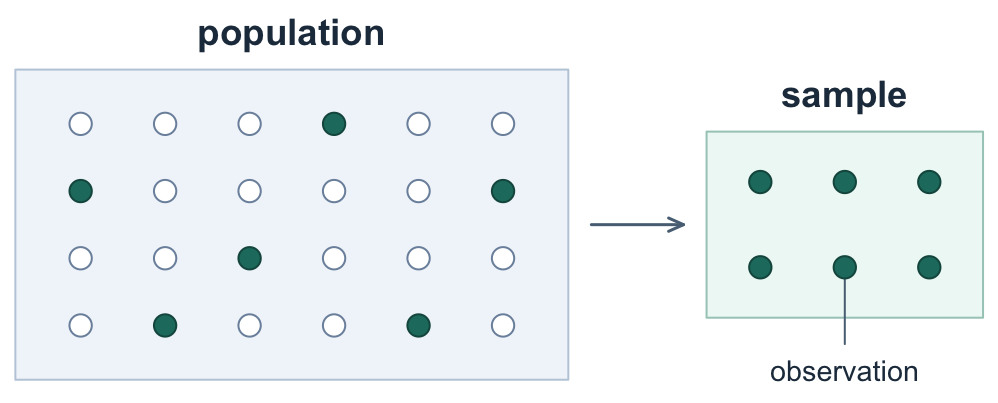
2.2.1 Antal rækker er ikke altid antal uafhængige observationer
Måler vi højden på én plante ti gange, har vi ti målinger, men stadig kun én plante. Målingerne kan ligne hinanden, fordi de kommer fra den samme plante. De indeholder derfor ikke den samme information som ti uafhængige planter. At behandle sådanne gentagne målinger som ti uafhængige planter kaldes ofte pseudoreplikation og kan få usikkerheden til at se mindre ud, end den er.
Uafhængighed afgøres først og fremmest ud fra, hvordan data er indsamlet. Et histogram eller en p-værdi kan ikke fortælle os, om forskeren har målt den samme plante flere gange. Hvis behandlinger gives til hele bakker eller potter, kan det desuden være bakken eller potten, der er den relevante uafhængige forsøgsenhed. Spørg derfor altid, hvad der blev udvalgt eller behandlet uafhængigt, før du tæller observationer.
Stop og tænk 1: Vi har fem planter, og hver plante vejes fire gange. Har vi 20 uafhængige planter? Hvilke oplysninger skal datasættet indeholde, hvis vi vil holde styr på gentagelserne?
Vis svar
Svar: De 20 vejninger kommer fra fem planter. Skriv plantens ID ved hver måling, så du kan se, hvilke vejninger der hører til samme plante.
2.3 Databeskrivelse
Før vi udfører en test, skal vi forstå, hvordan data ser ud. Vi begynder med kontrolgruppen og gemmer vægtene i en vektor. Højresiden af <- udvælger de rækker, hvor gruppen er ctrl, præcis som ved delmængder i det første kapitel.
## [1] 5.032
## [1] 4.17 4.50 4.53 4.61 5.14 5.17 5.18 5.33 5.58 6.11
## [1] 5.1552.3.1 Gennemsnit og median
Sorterer vi de ti kontrolvægte med sort(), står 5,14 og 5,17 på femte og sjette plads. Deres gennemsnit er 5,155, som er det samme resultat, vi får med median(ctrl).
Gennemsnittet er summen af observationerne divideret med antallet af observationer. Hvis de tre højder er 2, 4 og 6 cm, bliver gennemsnittet \((2 + 4 + 6)/3 = 4\) cm. I R beregner mean() det samme.
## [1] 4
## [1] 4
## [1] 4Medianen er den midterste værdi, når observationerne er sorteret. Hvis antallet er lige, bruger vi gennemsnittet af de to midterste værdier. Medianen beskriver derfor et punkt, hvor omtrent halvdelen af observationerne ligger på hver side.
Gennemsnit og median kan være meget forskellige. En ekstremt stor observation trækker gennemsnittet op, fordi alle værdier indgår direkte i summen. Medianen påvirkes mindre af, hvor langt en enkelt ekstrem observation ligger fra de øvrige værdier.
hoejder_med_stor_vaerdi <- c(2, 4, 6, 40)
mean(hoejder_med_stor_vaerdi)
median(hoejder_med_stor_vaerdi)## [1] 13
## [1] 5Her er gennemsnittet 13 cm og medianen 5 cm. Ingen af tallene er en regnefejl: De besvarer forskellige spørgsmål om centrum. Et gennemsnit alene fortæller os ikke, at én af observationerne ligger meget langt fra de øvrige. Derfor skal vi også undersøge variationen og tegne data. Vi sletter ikke automatisk en usædvanlig observation; først undersøger vi, om den skyldes en fejl eller er en reel del af variationen.
2.3.2 Sammenlign grupper med et boxplot
Et boxplot giver en kompakt oversigt over centrum og spredning. Stregen inde i boksen er medianen. Boksens kanter er de nedre og øvre hinges, som ligger tæt på kvartilerne. I små datasæt kan de afvige lidt fra resultatet af quantile(). “Whiskers” går ud til de yderste observerede værdier inden for 1,5 boksbredde fra boksens kanter; værdier længere ude vises som punkter. Sådanne punkter er ikke automatisk fejl.
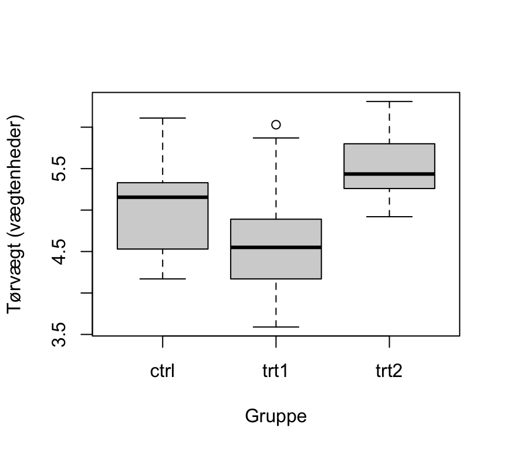
I kontrolgruppen viser den tykke streg medianen på 5,155, og knurhårene går ud til gruppens mindste og største vægt. I behandling 1 ligger den største vægt, 6,03, så langt fra boksen, at den er tegnet som et punkt.
Formlen weight ~ group betyder her “vis vægt fordelt på grupper”. Tegnet ~ læses ofte som “som funktion af” eller “efter”. Argumentet data = PlantGrowth fortæller R, hvor de to variabler findes. Vi møder den samme formelsyntaks igen i t-tests og regressionsmodeller.
2.3.3 Varians og standardafvigelse
To grupper kan have samme gennemsnit og alligevel være meget forskellige. I c(4, 4, 4) er alle værdier ens. I c(2, 4, 6) ligger værdierne spredt omkring det samme gennemsnit. Standardafvigelsen, forkortet SD efter standard deviation, beskriver spredningen omkring gennemsnittet.
Vi kan sammenligne spredningen direkte med sd().
## [1] 0
## [1] 2SD er kvadratroden af variansen og har samme enhed som målingerne. Her beregner vi først varians og SD for de tre højder og derefter gennemsnit og SD for kontrolplanternes tørvægt.
## [1] 4
## [1] 2
## [1] 5.032
## [1] 0.5830914Kontrolgruppens SD er cirka 0,58 vægtenheder. Det giver en idé om, hvor langt de enkelte plantevægte typisk ligger fra deres gennemsnit.
2.3.4 Kvartiler og interkvartilafstand
Kvartiler opdeler en sorteret fordeling i omtrent fire lige store dele. Den nedre kvartil, \(Q_1\), svarer til 25 %-fraktilen; medianen er 50 %-fraktilen; og den øvre kvartil, \(Q_3\), svarer til 75 %-fraktilen. Interkvartilafstanden, IQR, er \(Q_3-Q_1\) og beskriver bredden af den midterste del af fordelingen.
## 25% 50% 75%
## 4.5500 5.1550 5.2925
## [1] 0.7425
## [1] 4.17 6.11range() giver den mindste og den største værdi. Kvartiler kan beregnes med forskellige interpolationsregler, især i små datasæt. Vi bruger R’s standardregel i quantile(); derfor kan et kvartiltal ligge mellem to observerede værdier. Det ændrer ikke idéen om at beskrive centrum og spredning.
2.3.5 tapply()
Vi vil ofte beskrive hver gruppe for sig. tapply() tager først de værdier, vi vil opsummere, derefter den variabel, der definerer grupperne, og til sidst den funktion, vi vil anvende på hver gruppe.
table(PlantGrowth$group)
tapply(PlantGrowth$weight, PlantGrowth$group, mean)
tapply(PlantGrowth$weight, PlantGrowth$group, median)
tapply(PlantGrowth$weight, PlantGrowth$group, sd)##
## ctrl trt1 trt2
## 10 10 10
## ctrl trt1 trt2
## 5.032 4.661 5.526
## ctrl trt1 trt2
## 5.155 4.550 5.435
## ctrl trt1 trt2
## 0.5830914 0.7936757 0.4425733Læs den anden linje som: “Opdel vægtene efter gruppe, og beregn gennemsnittet i hver gruppe.” mean står her uden parenteser, fordi vi giver selve funktionen videre til tapply().
Hvis der er manglende vægte, er length() antallet af værdier inklusive NA. Antallet af faktisk observerede vægte skal i stedet beregnes som sum(!is.na(x)) for den relevante vektor. mean(x, na.rm = TRUE) beregner gennemsnittet blandt de observerede værdier, men forklarer ikke, hvorfor andre værdier mangler. Vi skal stadig undersøge det mønster.
2.4 Fordelinger
En fordeling beskriver, hvilke værdier en variabel kan have, og hvor hyppige eller sandsynlige de forskellige værdier er. I et histogram inddeles tallinjen i intervaller. Højden på hver søjle viser antallet af observationer i intervallet, når histogrammet er tegnet med antal på y-aksen.
2.4.1 Normalfordelingen
En normalfordeling er en symmetrisk, klokkeformet model for variation. Som i video 2 starter vi med en tænkt population af planter med gennemsnit 5 og standardafvigelse 1 vægtenhed. En større standardafvigelse gør kurven bredere. Et større gennemsnit flytter kurven til højre. Antal celler, andele og stærkt skæve koncentrationer kan kræve andre modeller.
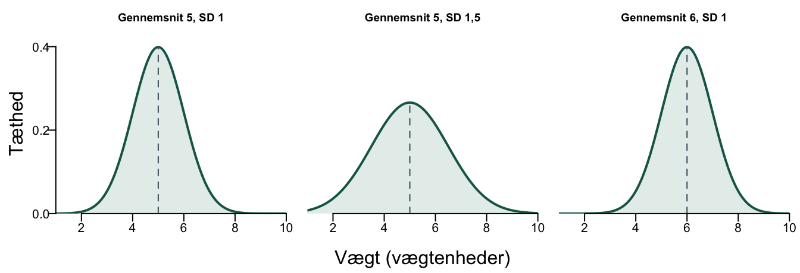
Hele arealet under en normalfordeling er 1. Sandsynligheden for, at en plantes vægt ligger inden for et bestemt interval, svarer til arealet over det interval. I den første model ligger halvdelen af arealet til højre for 5, så sandsynligheden for en vægt over 5 er 0,5.
Stop og tænk 2: To grupper har samme gennemsnit, men forskellige standardafvigelser. Vil et søjlediagram med kun de to gennemsnit vise forskellen mellem grupperne?
Vis svar
Svar: Søjlerne bliver lige høje, fordi gennemsnittene er ens. Diagrammet viser derfor ikke forskellen i spredning mellem grupperne.
2.5 Usikkerhed på gennemsnit
Med rnorm() kan vi trække vægte fra den tænkte population med gennemsnit 5 og SD 1. Prøv at køre koden igen. Du får nye observationer og som regel et nyt gennemsnit. Histogrammerne viser vægtene for de enkelte planter. Hvert mean()-kald giver ét gennemsnit for hele stikprøven.
x10 <- rnorm(10, mean = 5, sd = 1)
hist(x10, main = "10 planter", xlab = "Vægt", ylab = "Antal")
mean(x10)
x40 <- rnorm(40, mean = 5, sd = 1)
hist(x40, main = "40 planter", xlab = "Vægt", ylab = "Antal")
mean(x40)## [1] 5.690362
## [1] 5.092027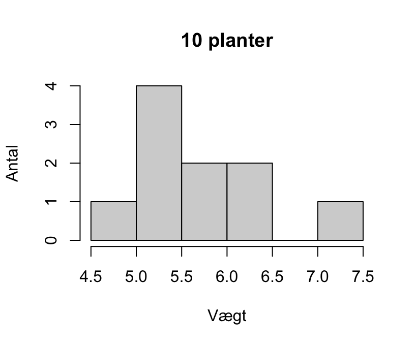
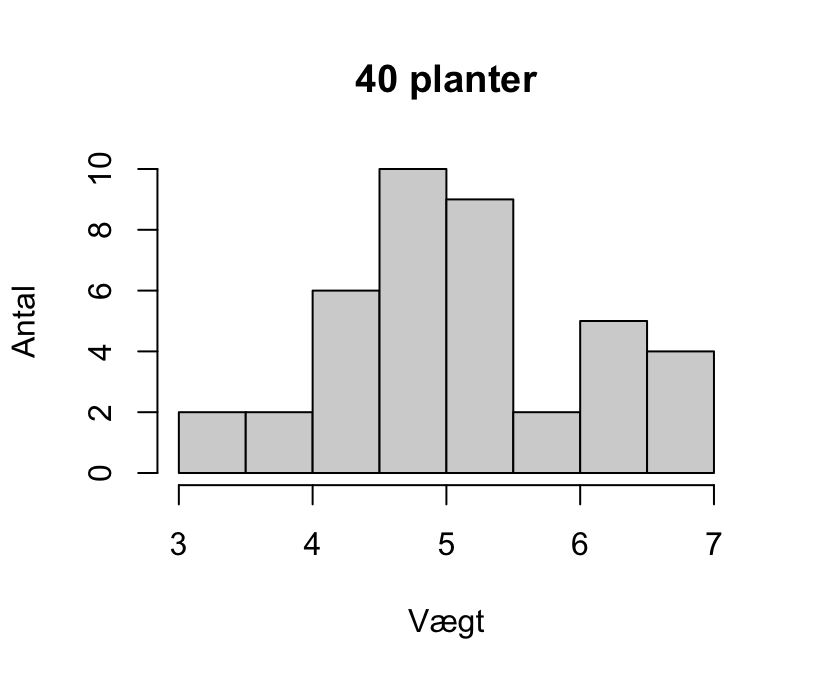
Med replicate() gentager vi beregningen 1.000 gange for hver stikprøvestørrelse. set.seed() gør det muligt at genskabe tallene og figuren.
set.seed(2027)
means_10 <- replicate(1000, mean(rnorm(10, mean = 5, sd = 1)))
means_40 <- replicate(1000, mean(rnorm(40, mean = 5, sd = 1)))
head(means_10)
c(n10 = sd(means_10), n40 = sd(means_40))## [1] 4.714754 5.183250 5.306444 5.493688 5.604773 4.360988
## n10 n40
## 0.3246307 0.1576732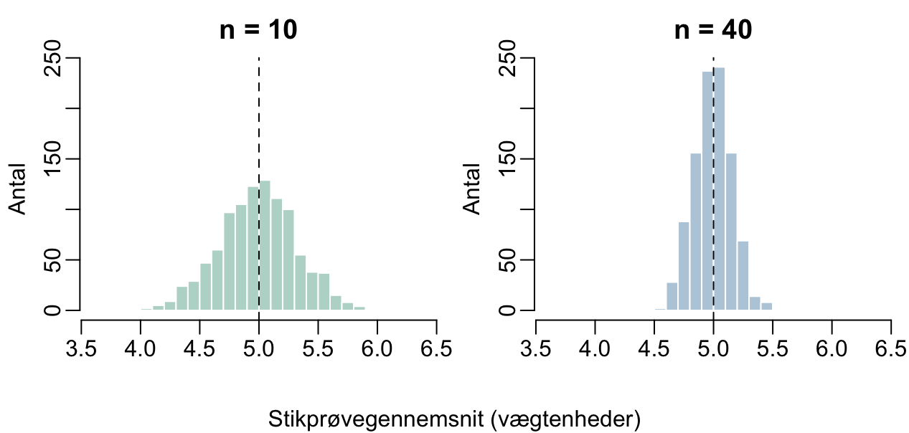
Nu viser histogrammerne gennemsnit af hele stikprøver. Begge bruger de samme akser. Gennemsnittene ligger tættere på 5, når vi trækker 40 planter frem for 10. SD blandt de simulerede gennemsnit falder fra cirka 0,32 til 0,16 vægtenheder. Det viser, at flere uafhængige observationer giver et mere præcist estimat af populationens gennemsnit.
2.5.1 Standardafvigelse og standardfejl
Som nævnt i afsnit 2.3.3 beskriver standardafvigelsen (SD), hvor spredt målingerne ligger omkring stikprøvens gennemsnit. I R beregner sd() stikprøvens standardafvigelse med formlen
\[ s = \sqrt{\frac{\sum_{i=1}^{n}(x_i-\bar{x})^2}{n-1}}. \]
Her er \(x_i\) den enkelte måling, \(\bar{x}\) gennemsnittet og \(n\) antallet af målinger. Standardafvigelsen har samme enhed som målingerne.
Afvigelserne fra stikprøvens gennemsnit summerer til nul, så den sidste afvigelse er bestemt af de andre. Vi dividerer derfor med \(n-1\) for at undgå at undervurdere populationens varians i gennemsnit.
Standardfejlen (SE, standard error) er standardafvigelsen for stikprøvegennemsnittet på tværs af nye stikprøver af samme størrelse. I vores tænkte population kender vi SD på 1. Med 10 uafhængige observationer får vi derfor 1 / sqrt(10), cirka 0,32 vægtenheder, som stemmer godt med simulationen.
For uafhængige observationer med samme populationsvarians estimeres standardfejlen på gennemsnittet som
\[ \mathrm{SE}(\bar{x}) = \frac{s}{\sqrt{n}}. \]
Når planterne varierer meget, bliver \(s\) og dermed usikkerheden større. Når vi måler flere uafhængige planter, kan deres variation i nogen grad udligne hinanden i gennemsnittet. Derfor bliver SE mindre med stigende \(n\). En firedobling af \(n\) halverer SE, hvis den underliggende variation er den samme. SD forventes derimod ikke at blive halveret, bare fordi vi måler flere planter.
For kontrolplanterne bruger vi standardafvigelsen fra de ti observerede vægte til at estimere SE.
n_ctrl <- length(ctrl)
mean_ctrl <- mean(ctrl)
sd_ctrl <- sd(ctrl)
se_ctrl <- sd_ctrl / sqrt(n_ctrl)
c(n = n_ctrl,
gennemsnit = mean_ctrl,
SD = sd_ctrl,
SE = se_ctrl)## n gennemsnit SD SE
## 10.0000000 5.0320000 0.5830914 0.1843897Stop og tænk 3: Vi firedobler antallet af uafhængige planter fra 10 til 40. Skal de enkelte planter nødvendigvis ligne hinanden mere? Hvad forventer vi derimod om usikkerheden på gennemsnittet?
Vis svar
Svar: De enkelte planter behøver ikke ligne hinanden mere. Ved samme underliggende spredning bliver standardfejlen halvt så stor, fordi \(\sqrt{40} = 2\sqrt{10}\).
2.6 Hypoteser og p-værdier
I video 3 spørger vi, om kontrolplanternes populationsgennemsnit afviger fra 5,4 vægtenheder. Vi bruger 5,4 som reference for at øve metoden. I en undersøgelse vælger vi referencen på forhånd ud fra det biologiske spørgsmål.
- Nulhypotesen (\(H_0\)) er, at populationsgennemsnittet er 5,4.
- Det tosidede alternativ (\(H_1\)) er, at populationsgennemsnittet er forskelligt fra 5,4.
## [1] 5.032
## [1] 0.368Kontrolgruppens stikprøvegennemsnit er 5,032. Det ligger 0,368 vægtenheder fra referencen. Selv hvis nulhypotesen holder, vil nye stikprøver give forskellige gennemsnit. Hvor ofte ville et gennemsnit ligge mindst lige så langt fra 5,4?
2.6.1 Hvad fortæller en p-værdi?
I video 3 bruger vi en normaltilnærmelse for stikprøvegennemsnittet, centreret ved 5,4 og med den beregnede standardfejl som spredning. Hele arealet under kurven er 1. De tre paneler viser, hvor meget areal der ligger tilbage i de to haler, når vi flytter grænserne længere fra 5,4.
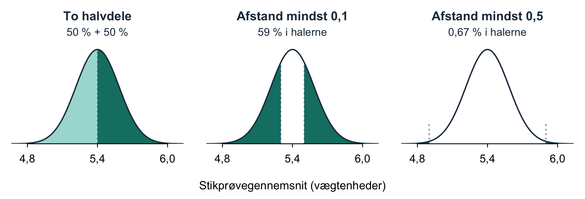
Figuren fra video 3 viser de to haler ved afstanden for vores observerede gennemsnit på 5,032.
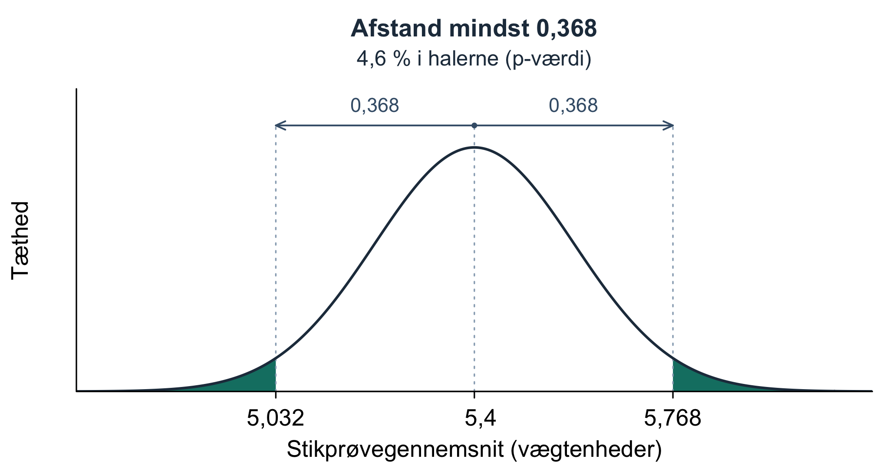
De to haler har samme areal. Det samlede areal er derfor dobbelt så stort som arealet i venstre hale.
En p-værdi er sandsynligheden for et resultat mindst lige så ekstremt som det observerede, beregnet under nulhypotesen og modellens øvrige antagelser.
En lille p-værdi betyder, at et sådant resultat er usædvanligt under modellen.
P-værdien angiver ikke sandsynligheden for, at nulhypotesen er sand.
Ved et på forhånd valgt signifikansniveau på 5 % afviser vi nulhypotesen, hvis p-værdien er under 0,05. En p-værdi på 0,05 eller derover giver for lidt grundlag til at afvise nulhypotesen ved det niveau.
Med normaltilnærmelsen giver de to haler tilsammen en p-værdi på 4,6 %. Det ligger lige under 5 %, så vi ville afvise nulhypotesen med denne tilnærmelse. I næste afsnit bruger vi en t-test, som tager højde for, at standardfejlen er estimeret fra data.
2.7 Ét gennemsnit mod en reference
I normaltilnærmelsen brugte vi den estimerede standardfejl som et fast tal. I video 4 del 1 bruger vi en t-test, hvor t-fordelingens tungere haler afspejler usikkerheden ved at estimere standardfejlen fra stikprøven. Med ti observationer bruger testen ni frihedsgrader.
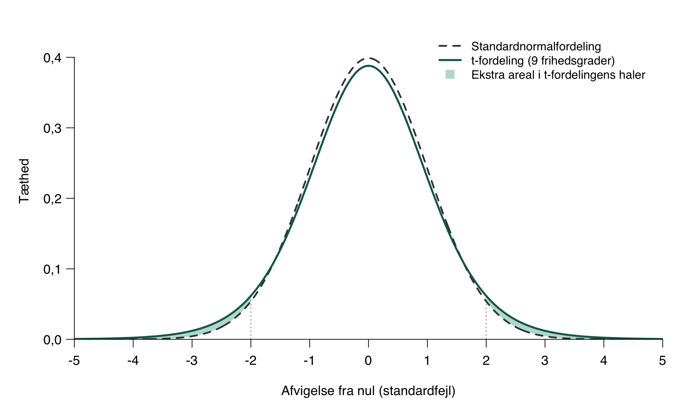
##
## One Sample t-test
##
## data: ctrl
## t = -1.9958, df = 9, p-value = 0.07708
## alternative hypothesis: true mean is not equal to 5.4
## 95 percent confidence interval:
## 4.614882 5.449118
## sample estimates:
## mean of x
## 5.032mu angiver gennemsnittet under nulhypotesen. Med alternative = "two.sided" tester vi for afvigelser i begge retninger.
2.7.1 Hvad fortæller t-værdien?
I outputtet står t = -1,9958. Tælleren er stikprøvegennemsnittet minus referencen, og nævneren er den estimerede standardfejl. Kontrolgruppens gennemsnit ligger cirka to standardfejl under 5,4.
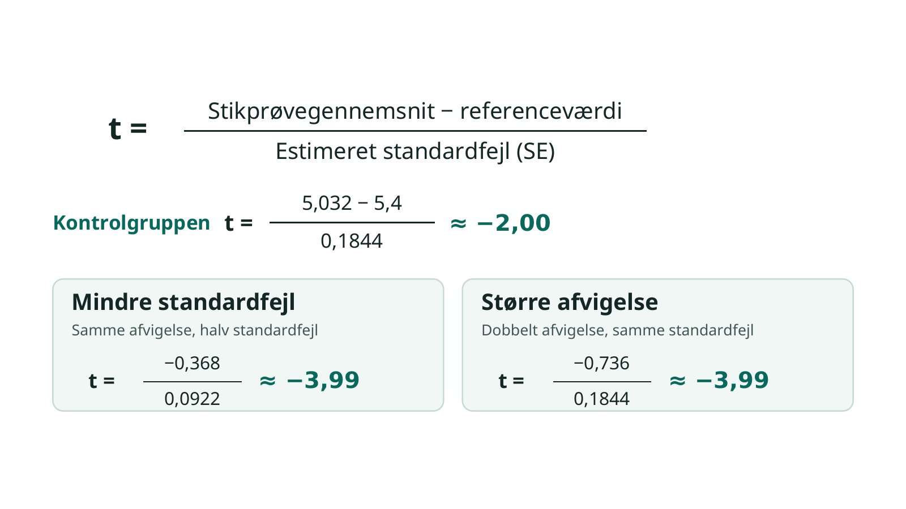
Med samme forskel giver en mindre standardfejl en t-værdi længere fra nul. Det samme sker, hvis afvigelsen fra referencen bliver større, mens standardfejlen er uændret. Med de samme frihedsgrader bliver den tosidede p-værdi mindre, når t-værdien ligger længere fra nul.
## [1] -1.995773T-testen giver p = 0,077. T-fordelingen har mere areal i halerne ved den samme afstand målt i standardfejl, så p-værdien er større end normaltilnærmelsens 0,046. Med t-testen har vi for lidt grundlag til at afvise 5,4 ved 5 %-niveauet.
Under 95 percent confidence interval står de to grænser for kontrolgruppens populationsgennemsnit. Her går intervallet fra cirka 4,61 til 5,45 vægtenheder og omfatter 5,4.
Testen bygger på uafhængige observationer og en tilnærmelsesvis normal fordeling af vægtene i kontrolpopulationen. Med ti planter bør vi især være opmærksomme på stærk skævhed og usædvanlige værdier.
2.8 T-test: to uafhængige grupper
I video 4 del 2 bruger vi en t-test til at sammenligne kontrolgruppen med behandling 2. Vi beregner forskellen som kontrol minus behandling 2.
- Nulhypotesen (\(H_0\)) er, at populationsmiddelværdierne for behandling 2 og kontrol er ens.
- Det tosidede alternativ (\(H_1\)) er, at populationsmiddelværdierne for behandling 2 og kontrol er forskellige.
En t-test for to uafhængige grupper sammenligner to populationsmiddelværdier. Som standard tillader R’s t.test(), at grupperne har forskellige varianser.
Før testen skal vi overveje, om observationerne er uafhængige både inden for og mellem grupperne. Med ti observationer i hver gruppe forudsætter vi her, at vægtene er tilnærmelsesvis normalfordelte i hver population. Brug boxplottet med de tre forsøgsgrupper til at se efter stærk skævhed og usædvanlige værdier. Vi ser nærmere på antagelserne i workshoppen ved næste undervisningsgang.
## [1] -0.494##
## Welch Two Sample t-test
##
## data: ctrl and trt2
## t = -2.134, df = 16.786, p-value = 0.0479
## alternative hypothesis: true difference in means is not equal to 0
## 95 percent confidence interval:
## -0.98287213 -0.00512787
## sample estimates:
## mean of x mean of y
## 5.032 5.526Med t.test(ctrl, trt2) tester vi forskellen første gruppe minus anden gruppe.
2.8.1 Sådan læser du outputtet
| Felt i R | Sådan læser du det |
|---|---|
data |
De to grupper i samme rækkefølge som i t.test(). |
t |
Forskellen mellem stikprøvegennemsnittene målt i standardfejl. |
df |
Frihedsgraderne, som bestemmer den t-fordeling, R bruger. R beregner dem ud fra stikprøvestørrelserne og spredningen i begge grupper. |
p-value |
Sandsynligheden for en t-værdi mindst lige så langt fra nul som den observerede, hvis nulhypotesen og testens antagelser holder. |
alternative hypothesis |
Den alternative hypotese. not equal to 0 betyder, at vi tester for forskelle i begge retninger. |
95 percent confidence interval |
Nedre og øvre grænse for 95 %-konfidensintervallet for forskellen mellem populationsgennemsnittene. |
sample estimates |
Stikprøvegennemsnittet for hver gruppe. mean of x er gennemsnittet for første gruppe, og mean of y er gennemsnittet for anden gruppe. |
Eksemplet fra video 4 del 2
- Stikprøvegennemsnittene er 5,032 for kontrol og 5,526 for behandling 2. Forskellen kontrol minus behandling 2 er -0,494 vægtenheder. Planterne i behandling 2 vejede altså i gennemsnit mere end kontrolplanterne.
- T-værdien er cirka -2,13. Kontrolgruppens gennemsnit ligger godt to standardfejl under gennemsnittet for behandling 2. R bruger cirka 16,8 frihedsgrader.
- P-værdien er 0,0479. Det er lige under 0,05, så ved et signifikansniveau på 5 % afviser vi nulhypotesen om ens populationsgennemsnit.
- 95 %-konfidensintervallet for kontrol minus behandling 2 går fra -0,983 til -0,005 vægtenheder. Den øvre grænse ligger tæt på nul, så en meget lille forskel er også forenelig med data under modellen.
2.8.2 Se de enkelte observationer
Med plot() kan vi vise hver plante som et punkt. Vi bruger 1 og 2 til at placere grupperne på x-aksen og axis() til at skrive gruppenavnene.
gruppe <- rep(c(1, 2), times = c(length(ctrl), length(trt2)))
plot(gruppe, c(ctrl, trt2), pch = 1, xaxt = "n", xlim = c(0.5, 2.5),
xlab = "Gruppe", ylab = "Tørvægt (vægtenheder)")
axis(1, at = c(1, 2), labels = c("Kontrol", "Behandling 2"))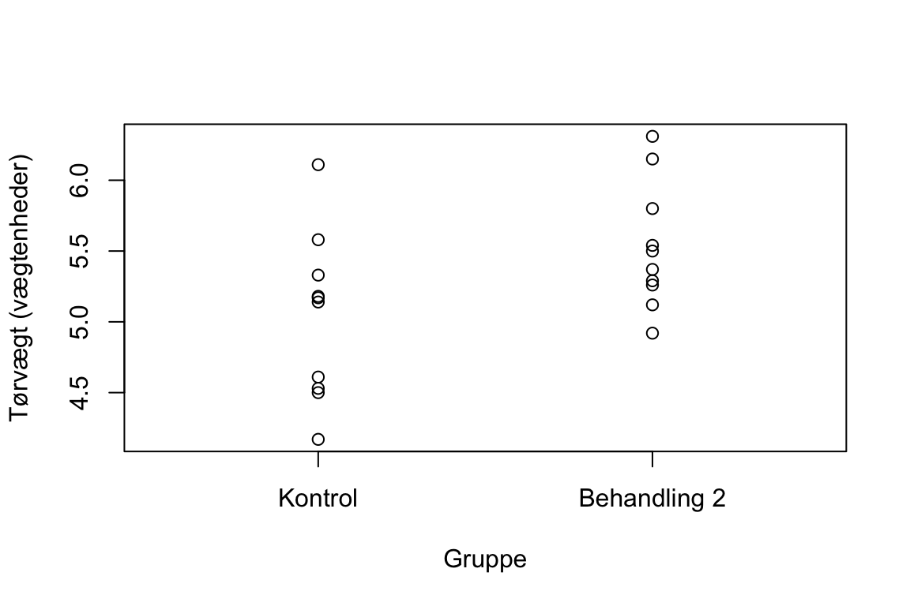
Punkter med næsten samme tørvægt kan overlappe. Figuren supplerer boxplottet ved at vise spredningen og eventuelle usædvanlige målinger i hver gruppe.
Vi bruger PlantGrowth som et enkelt undervisningseksempel. Den korte dokumentation beskriver ikke alle detaljer om udvælgelse og randomisering. Hvor langt resultatet kan generaliseres, og om en forskel kan fortolkes kausalt, afhænger også af disse oplysninger.
2.9 T-test til parrede målinger
Forestil dig nu, at vi måler de samme personers reaktionstid før og efter en øvelse. En person med langsom reaktionstid før øvelsen kan også have langsom reaktionstid efter. De to målinger fra personen er derfor ikke uafhængige. Vores spørgsmål er i stedet: Hvad er den gennemsnitlige ændring inden for en person?
Følgende tal er konstruerede undervisningsdata. Hver række indeholder én person, og begge reaktionstider måles i millisekunder. Datasættet ligger direkte i koden og kræver derfor ingen fil fra Absalon.
reaktion <- data.frame(
person = paste0("P", 1:10),
before = c(720, 810, 690, 760, 850, 730, 780, 900, 840, 770),
after = c(700, 760, 710, 710, 800, 710, 750, 830, 800, 740)
)
reaktion$aendring <- reaktion$after - reaktion$before
reaktion## person before after aendring
## 1 P1 720 700 -20
## 2 P2 810 760 -50
## 3 P3 690 710 20
## 4 P4 760 710 -50
## 5 P5 850 800 -50
## 6 P6 730 710 -20
## 7 P7 780 750 -30
## 8 P8 900 830 -70
## 9 P9 840 800 -40
## 10 P10 770 740 -30Vi har valgt efter minus før. Negative ændringer betyder derfor kortere, altså hurtigere, reaktionstider. Parret er bevaret, fordi begge målinger står på den samme række sammen med personens ID. Vi må ikke sortere de to kolonner hver for sig. Hvis målingerne kommer fra forskellige tabeller, skal de først forbindes ved hjælp af person-ID, ikke blot ved deres aktuelle rækkefølge. Hvis én måling i et par mangler, skal det pågældende par håndteres samlet; vi må ikke fjerne manglende værdier separat i de to vektorer og derved forskyde parringen. t.test(..., paired = TRUE) udelader ufuldstændige par, men vi skal stadig undersøge, hvorfor værdierne mangler.
person_nr <- seq_along(reaktion$person)
plot(person_nr, reaktion$aendring,
xlab = "Person", ylab = "Efter minus før (ms)",
main = "Ændring for hver person", xaxt = "n",
ylim = range(0, reaktion$aendring), pch = 19)
axis(1, at = person_nr, labels = reaktion$person)
abline(h = 0, lty = 2)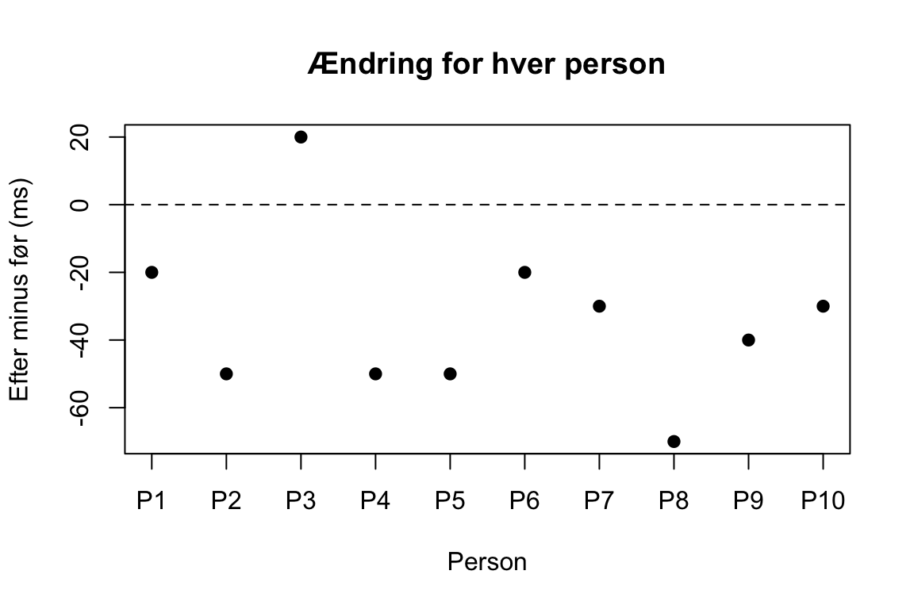
Hver prik viser én persons ændring. Prikker under nul svarer til kortere reaktionstider efter øvelsen.
- Nulhypotesen (\(H_0\)) er, at den gennemsnitlige ændring i reaktionstid i populationen er 0 ms.
- Det tosidede alternativ (\(H_1\)) er, at den gennemsnitlige ændring i reaktionstid i populationen er forskellig fra 0 ms.
##
## Paired t-test
##
## data: reaktion$after and reaktion$before
## t = -4.3732, df = 9, p-value = 0.001789
## alternative hypothesis: true mean difference is not equal to 0
## 95 percent confidence interval:
## -51.58737 -16.41263
## sample estimates:
## mean difference
## -34Reaktionstiden faldt i gennemsnit med 34 ms i stikprøven. For ændringen efter minus før går 95 %-konfidensintervallet fra -51,6 til -16,4 ms, og p-værdien er 0,00179. Intervallet ligger helt under nul, og p-værdien er under 0,05. Faldet er derfor statistisk signifikant ved 5 %-niveauet.
2.9.1 Se fordelingen af ændringerne
De uafhængige enheder er de ti personer. Testens normalitetsantagelse vedrører ændringerne. Et histogram giver et indtryk af skævhed og usædvanlige værdier. Med ti personer er det svært at vurdere formen sikkert.
hist(reaktion$aendring,
main = "Ændring i reaktionstid",
xlab = "Efter minus før (ms)", ylab = "Antal personer",
col = "lightblue")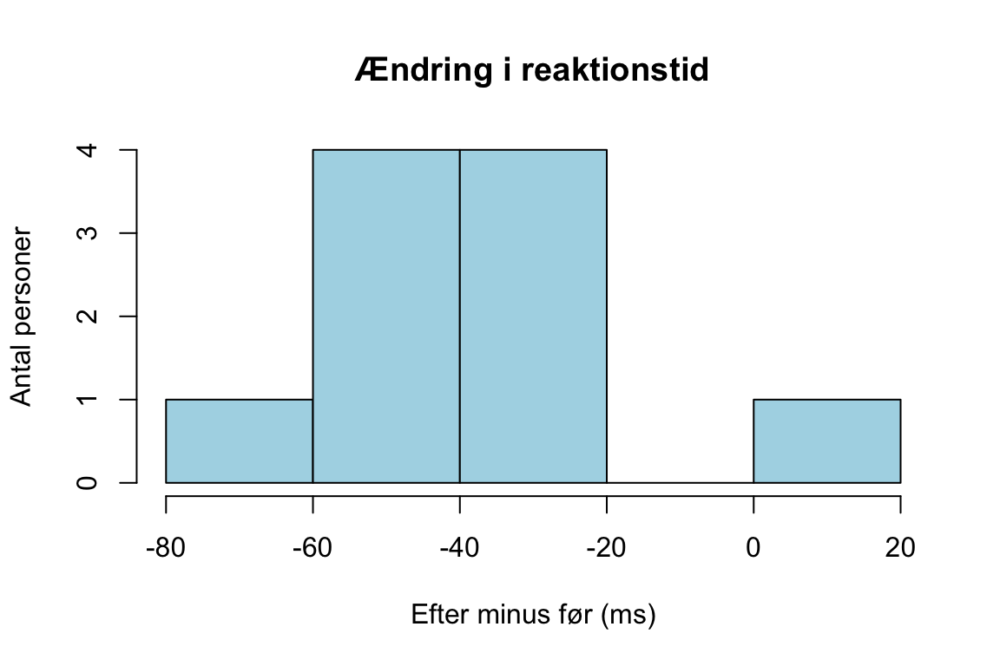
Ekstra: Et Q–Q-plot sammenligner de sorterede ændringer med, hvad vi ville forvente under en normalfordeling. En nogenlunde ret linje er forenelig med modellen. Med få observationer kan punkterne også afvige fra linjen ved tilfældig variation.
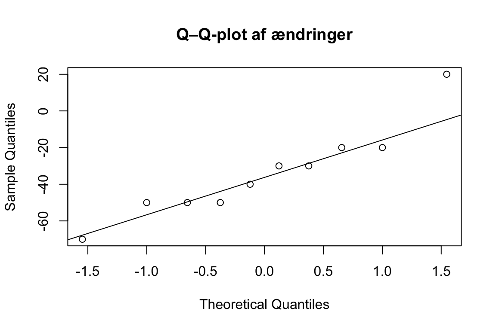
Et før/efter-design uden en passende kontrol gør det ikke muligt alene at afgøre, om øvelsen forårsagede ændringen. For eksempel kan personerne også være blevet mere fortrolige med måleproceduren. En statistisk test erstatter ikke forsøgsdesign.
Stop og tænk 4: Hvad sker der med fortegnet på den gennemsnitlige ændring, hvis vi bruger før minus efter? Hvad sker der med p-værdien i en tosidet test?
Vis svar
Svar: Den gennemsnitlige ændring skifter fortegn. P-værdien i den tosidede test er den samme, fordi t-værdien stadig ligger lige langt fra nul.
2.10 Chi-i-anden-test
Afsnittet følger video 5.
Her bruger vi en konstrueret tabel til at undersøge, om blomsterfarven hænger sammen med antallet af kopier af en bestemt allel. Rækkerne viser de to farver, og kolonnerne viser grupperne med 0, 1 eller 2 kopier. Hver plante bidrager til præcis én celle. Tallet 24 viser, hvor mange lyserøde planter der har to kopier.
blomster <- matrix(c(29, 31, 16,
11, 16, 24),
nrow = 2, byrow = TRUE,
dimnames = list(
Farve = c("Roed", "Lyseroed"),
Allelkopier = c("0", "1", "2")))
blomster## Allelkopier
## Farve 0 1 2
## Roed 29 31 16
## Lyseroed 11 16 24- Nulhypotesen (\(H_0\)) er, at blomsterfarve og antal allelkopier er uafhængige i populationen. Så forventer vi den samme andel lyserøde planter i hver gruppe.
- Den alternative hypotese (\(H_1\)) er, at blomsterfarve og antal allelkopier hænger sammen i populationen.
Med addmargins() ser vi, at 51 af de 127 planter er lyserøde, og at 40 af de 127 har to kopier. Under uafhængighed ganger vi de to andele og ganger derefter med 127 for at få det forventede antal lyserøde planter med to kopier.
## Allelkopier
## Farve 0 1 2 Sum
## Roed 29 31 16 76
## Lyseroed 11 16 24 51
## Sum 40 47 40 127## [1] 16.06299Det giver cirka 16,06 forventede planter mod 24 observerede. Samme regneregel gælder for hver celle. Gang rækkesummen med kolonnesummen, og dividér med det samlede antal. Tabellen chi$expected viser alle de forventede antal.
## Allelkopier
## Farve 0 1 2
## Roed 23.93701 28.12598 23.93701
## Lyseroed 16.06299 18.87402 16.06299##
## Pearson's Chi-squared test
##
## data: blomster
## X-squared = 9.9516, df = 2, p-value = 0.006903For hver celle beregner testen den kvadrerede forskel mellem det observerede og det forventede antal divideret med det forventede antal. Summen af de seks bidrag er teststørrelsen. Du kan kontrollere den med sum((blomster - chi$expected)^2 / chi$expected).
Her er p-værdien cirka 0,0069. Det er under 0,05, så ved et signifikansniveau på 5 % afviser vi nulhypotesen om uafhængighed.
Testen kræver uafhængige observationer og tilstrækkeligt store forventede celletal. Brug de observerede antal som inddata.
## Allelkopier
## Farve 0 1 2
## Roed 0.725 0.6595745 0.4
## Lyseroed 0.275 0.3404255 0.6margin = 2 beregner andele inden for hver kolonne. I eksemplet er 27,5 % af planterne med nul kopier lyserøde. Blandt planterne med to kopier er andelen 60 %. Andelene viser, hvordan blomsterfarven hænger sammen med antallet af kopier i tabellen.
2.11 Problemstillinger
Problem 1
Lav quizzen “Quiz - Statistik” på Absalon.
Problem 2
Lav vektoren maaling_oev <- c(8, 9, 10, 11, 12).
a) Beregn gennemsnit, median og standardafvigelse.
b) Lav en ny vektor, hvor den sidste værdi er 40 i stedet for 12, og gentag beregningerne. Beskriv, hvad der ændrer sig.
c) Hvorfor er det en dårlig idé automatisk at slette 40, bare fordi den påvirker gennemsnittet?
Hint: Du kan ændre den femte værdi i en kopi med ny_vektor[5] <- 40.
Problem 3
I ToothGrowth måles tandvækst hos marsvin, der fik C-vitamin i forskellige doser som appelsinjuice eller askorbinsyre. Indlæs det indbyggede datasæt i dit script.
a) Kig på hjælpesiden til datasættet (?ToothGrowth). Hvad er observationsenheden? Hvilke variabler indeholder datasættet, og hvilke typer har de? Hvad betyder de to værdier i supp? Beregn, hvor mange marsvin der fik hver type tilskud.
Hint: Giv kolonnen supp til table().
b) I ToothGrowth er der én måling pr. marsvin. Forestil dig et forsøg med de samme marsvin, hvor tandvæksten måles tre gange pr. dyr. Hvor mange målinger og hvor mange uafhængige marsvin ville der så være? Forklar forskellen.
c) Kolonnen dose angiver dosis i mg C-vitamin pr. dag. Lav en delmængde med de marsvin, der fik 1 mg om dagen, så du kan sammenligne de to tilskud ved samme dosis. Gem din delmængde som en ny dataframe med et passende navn.
d) Brug tapply() på din delmængde til at beregne gennemsnit, median og standardafvigelse (SD) for len i hver tilskudsgruppe (supp).
e) Tegn et boxplot af len for de to typer tilskud, og giv akserne informative titler. Hvilken gruppe har den højeste median ifølge boxplottet? Har den samme gruppe også det højeste gennemsnit i d)?
Problem 4
Indlæs det indbyggede datasæt ToothGrowth. Vi vil undersøge, om populationsgennemsnittet for len i appelsinjuicegruppen (OJ) ved 1 mg C-vitamin om dagen afviger fra 20 (en referenceværdi, der er valgt på forhånd).
a) Lav en delmængde af ToothGrowth med de marsvin, der fik 1 mg C-vitamin om dagen. Gem den som en ny dataframe med et passende navn. Udvælg len for appelsinjuicegruppen i delmængden, og brug målingerne til at beregne SD og SE for gruppen.
b) Hvad beskriver SD og SE hver især?
c) Skriv nulhypotesen og den tosidede alternative hypotese for sammenligningen med 20.
d) Hvor langt ligger stikprøvegennemsnittet fra 20?
e) Brug t.test() til at teste tosidet, om OJ-gruppens populationsgennemsnit afviger fra 20. Hvilken p-værdi får du, og hvad konkluderer du ved et signifikansniveau på 5 %?
Problem 5
Brug en delmængde af ToothGrowth med de marsvin, der fik 1 mg C-vitamin om dagen. Er den gennemsnitlige tandvækst forskellig mellem appelsinjuicegruppen (OJ) og askorbinsyregruppen (VC) ved den dosis?
a) Skriv nulhypotesen og den tosidede alternative hypotese med ord.
b) Udvælg len for appelsinjuicegruppen (OJ) og askorbinsyregruppen (VC) fra delmængden. Beregn forskellen mellem gennemsnittene som OJ minus VC.
c) Udfør en t-test. Find intervallet og p-værdien i outputtet, og kontrollér, hvilken vej forskellen er defineret.
d) Skriv en konklusion med forskellens retning, størrelse og p-værdi. Hvilken dosis gælder din konklusion for?
Problem 6
Læs afsnittet om den parrede t-test.
Hent reactions.txt på Absalon, læg filen i din arbejdsmappe, og indlæs den i R.
I filen er der én række pr. måling. subject er personens ID, time er tidspunktet (before eller after), og RT er den målte reaktionstid.
a) Gem delmængderne for before og after som foer og efter. Sortér rækkerne i hver delmængde efter subject, så oplysningerne på hver række følges ad. Tjek, at hver person optræder én gang i hver delmængde, og at ID’erne står i samme rækkefølge. Beregn den gennemsnitlige reaktionstid før og efter samt gennemsnittet af ændringerne efter minus før.
Hint: Sådan sorterer du førmålingerne efter personens ID.
Gør det tilsvarende for efter, og brug identical() til at sammenligne de to ID-vektorer.
b) Hvor mange uafhængige enheder er der? Hvilken t-test passer til designet, og hvorfor?
c) Udfør testen. Find den gennemsnitlige ændring, t-statistikken og p-værdien i outputtet. Hvordan formulerer R den alternative hypotese?
d) Skriv en konklusion med ændringens størrelse og retning. Blev reaktionstiden kortere eller længere i gennemsnit? Hvilke oplysninger om forsøget mangler du for at kunne forklare årsagen til ændringen?
Problem 7
Hænger overlevelse sammen med passagerklasse? Kør koden for at få en tabel over de tre passagerklasser i R’s indbyggede Titanic-datasæt. Tabellen samler alders- og kønsgrupperne og udelader besætningen.
data("Titanic")
passagerer <- margin.table(Titanic, c(1, 4))
passagerer <- passagerer[c("1st", "2nd", "3rd"), ]
passagerera) Hvor mange passagerer er der i alt?
b) Skriv nulhypotesen med ord.
c) Beregn det forventede antal overlevende på første klasse ud fra række- og kolonnetotalerne.
d) Udfør en chi-i-anden-test. Kontrollér dit resultat fra c) med $expected i testresultatet.
e) Hvad fortæller p-værdien om sammenhængen?
f) Brug prop.table(passagerer, margin = 1) til at finde andelen, der overlevede i hver klasse. Hvilken klasse havde den højeste andel?
Hint: Passagerklasserne står i rækkerne, så margin = 1 giver andele inden for hver klasse. I blomstereksemplet stod grupperne i kolonnerne, så vi brugte margin = 2.
Problem 8
Det indbyggede datasæt CO2 indeholder flere målinger af de samme planter ved forskellige CO2-koncentrationer. Læs ?CO2, og indlæs datasættet.
a) Lav en delmængde med de rækker, hvor Type er "Quebec", og conc er 350. Brug table() på kolonnen Plant i din delmængde til at kontrollere, at hver plante kun optræder én gang. Hvor mange planter er der i hver behandling?
b) Brug din delmængde fra a), og lav én vektor med uptake for nonchilled og én for chilled. Beregn gennemsnittet for hver gruppe, og udfør en t-test med de to vektorer som i video 4 del 2. Giv t.test() vektoren for nonchilled først.
c) Prøv også at køre t-testen med en formel. Tilpas skabelonen ved at erstatte maalinger med navnet på målekolonnen, grupper med navnet på gruppekolonnen og din_delmaengde med navnet på din delmængde.
Får du de samme gruppegennemsnit og den samme p-værdi som i b)?
d) Hvorfor må vi ikke gøre stikprøven kunstigt større ved at inkludere alle koncentrationer og behandle rækkerne som uafhængige planter?
e) Hvilken begrænsning følger af det lille antal planter? Dækker testen forskelle over alle koncentrationer?
2.12 Korrelation og simpel lineær regression
Dette afsnit hører til næste undervisningsgang om R Markdown. Se kapitel 3 om R Markdown.
Afsnittet ligger her sammen med de andre statistiske metoder. I undervisningen bruger vi simpel lineær regression som eksempel på, hvordan du samler kode, resultater og fortolkning i en rapport.
2.12.1 Sammenhænge
Datasættet trees indeholder målinger af 31 træer. Ifølge R’s dokumentation er variablen Girth trods sit navn diameter i tommer, Height er højde i fod, og Volume er volumen i kubikfod.
I det følgende laver vi et punktplot med diameter på x-aksen og volumen på y-aksen. Hvert punkt i figuren er ét træ.
data("trees")
plot(trees$Girth, trees$Volume,
xlab = "Diameter (tommer)", ylab = "Volumen (kubikfod)",
main = "Diameter og volumen af 31 træer", pch = 19)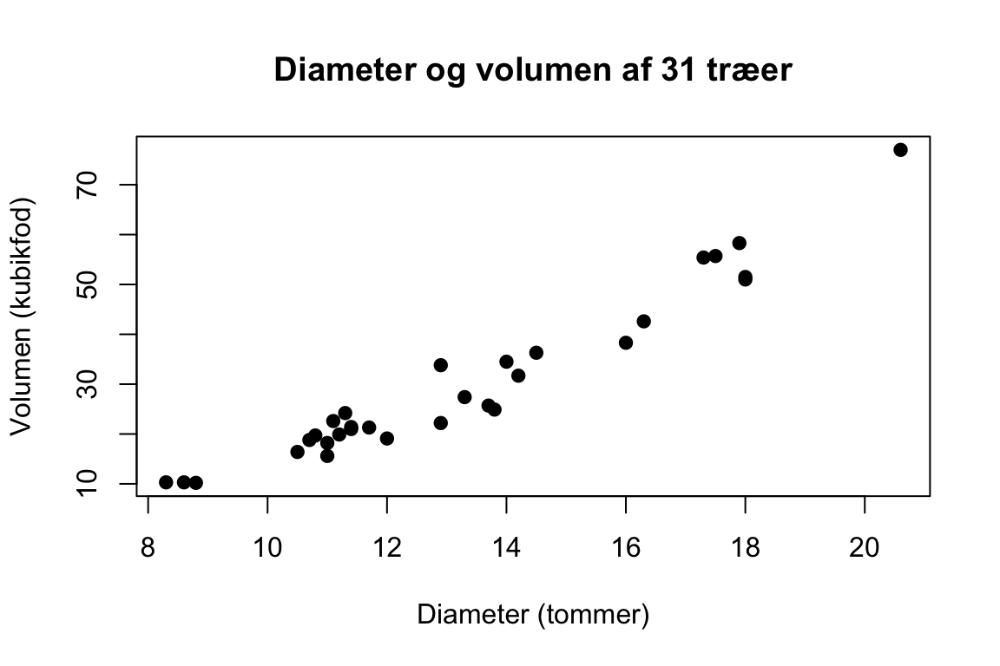
Pearsons korrelation, \(r\), beskriver styrken og retningen af en lineær sammenhæng mellem to numeriske variabler. Den ligger mellem \(-1\) og \(+1\).
- Et positivt fortegn betyder, at større værdier af den ene variabel typisk følges af større værdier af den anden.
- Et negativt fortegn betyder, at større værdier af den ene variabel typisk følges af mindre værdier af den anden.
- En værdi tæt på nul betyder, at der er svag eller ingen lineær sammenhæng. Der kan stadig være en tydelig kurvet sammenhæng.
Jo tættere korrelationen ligger på \(-1\) eller \(+1\), desto stærkere er den lineære sammenhæng. I R beregner vi Pearsons korrelation med funktionen cor().
## [1] 0.9671194Korrelationen er cirka 0,97. Det viser en stærk positiv lineær sammenhæng i stikprøven, hvor træer med større diameter typisk også har større volumen.
Vi kan også bruge cor.test() til at teste, om korrelationen i populationen er forskellig fra nul.
- Nulhypotesen (\(H_0\)) er, at korrelationen mellem diameter og volumen er 0 i populationen.
- Det tosidede alternativ (\(H_1\)) er, at korrelationen mellem diameter og volumen er forskellig fra 0 i populationen.
Vi giver funktionen de to variabler og vælger Pearsons metode med method = "pearson". Som standard udfører cor.test() en tosidet test.
##
## Pearson's product-moment correlation
##
## data: trees$Girth and trees$Volume
## t = 20.478, df = 29, p-value < 2.2e-16
## alternative hypothesis: true correlation is not equal to 0
## 95 percent confidence interval:
## 0.9322519 0.9841887
## sample estimates:
## cor
## 0.9671194Under sample estimates genfinder vi korrelationen på cirka 0,97. P-værdien er mindre end \(2,2 \cdot 10^{-16}\) og dermed langt under 0,05. Under testens antagelser giver resultatet grundlag for at afvise nulhypotesen ved et signifikansniveau på 5 %. Fortegnet på korrelationen viser, at sammenhængen er positiv.
Det er vigtigt at understrege, at en signifikant korrelation ikke nødvendigvis betyder, at der er en årsagssammenhæng. For eksempel kan to mål begge hænge sammen med en tredje egenskab, som alder eller størrelse.
Stop og tænk 5: I en tænkt undersøgelse finder vi en signifikant positiv korrelation mellem børns skostørrelse og læsefærdigheder. Kan vi konkludere, at større fødder gør børn bedre til at læse? Hvilken tredje variabel kan forklare sammenhængen?
Vis svar
Svar: Børnenes alder kan være en fælles forklaring. Ældre børn har typisk både større fødder og bedre læsefærdigheder. Korrelationen alene giver derfor ikke grundlag for at konkludere, at større fødder forbedrer læsningen.
2.12.2 Simpel lineær regression
Er du ny til simpel lineær regression? Se først video 2 i kapitlet om R Markdown, som introducerer metoden og viser, hvordan du bruger den i R.
I simpel lineær regression beskriver vi den forventede værdi af en numerisk respons \(Y\) ud fra én prædiktor \(X\). Her er volumen responsen, som vi vil forudsige, og diameter er prædiktoren, som vi bruger til at forudsige den.
\[ Y_i = \beta_0 + \beta_1 X_i + \varepsilon_i. \]
Indekset \(i\) angiver det enkelte træ.
- \(\beta_0\) er skæringen med y-aksen. Den angiver den forventede værdi af \(Y\), når \(X = 0\).
- \(\beta_1\) er hældningen. Når \(X\) stiger med én enhed, ændres den forventede værdi af \(Y\) med \(\beta_1\) enheder. En positiv hældning betyder, at den forventede \(Y\)-værdi stiger, og en negativ hældning betyder, at den falder.
- \(\varepsilon_i\) er fejlleddet. Det beskriver, hvor meget observation \(i\) afviger fra populationens forventede linje. Figuren nedenfor viser den samme idé med en linje tilpasset vores data. Her kaldes den lodrette forskel mellem en observation og den tilpassede linje for en residual.
Den blå linje beskriver den forudsagte volumen ved hver diameter. Punkterne er de observerede træer. Den orange afstand fremhæver residualen for ét træ, hvor den observerede volumen ligger over linjens forudsigelse.
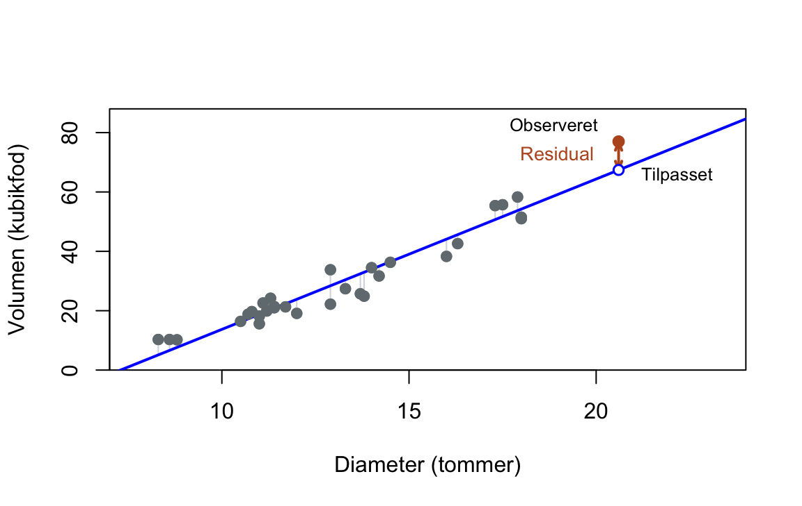
For at finde en forudsagt værdi vælger vi en værdi på x-aksen, går lodret op til linjen og læser derefter den tilsvarende værdi på y-aksen. Ved en diameter på 15 tommer giver linjen en forudsagt volumen på cirka 39 kubikfod.
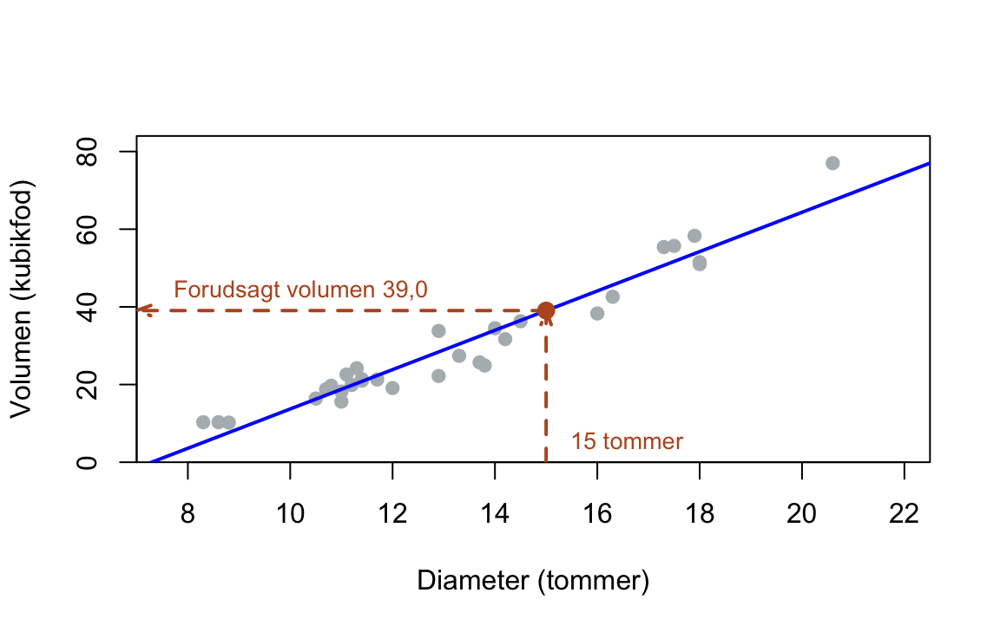
Tilpas modellen i R med lm()
Vi kan tilpasse en simpel lineær regression med funktionen lm(), som står for linear model. I modellens formel skriver vi først den afhængige variabel, altså den respons, vi vil forudsige. Derefter kommer tegnet ~, kaldet en tilde, og så den uafhængige variabel, også kaldet prædiktoren. I simpel lineær regression bruger vi én prædiktor.
Her betyder Volume ~ Girth, at vi vil forudsige volumen ud fra diameter. Med data = trees angiver vi, hvilket datasæt variablerne findes i. Vi gemmer den tilpassede model som model og bruger summary() til at få en oversigt over resultatet.
##
## Call:
## lm(formula = Volume ~ Girth, data = trees)
##
## Residuals:
## Min 1Q Median 3Q Max
## -8.065 -3.107 0.152 3.495 9.587
##
## Coefficients:
## Estimate Std. Error t value Pr(>|t|)
## (Intercept) -36.9435 3.3651 -10.98 7.62e-12 ***
## Girth 5.0659 0.2474 20.48 < 2e-16 ***
## ---
## Signif. codes: 0 '***' 0.001 '**' 0.01 '*' 0.05 '.' 0.1 ' ' 1
##
## Residual standard error: 4.252 on 29 degrees of freedom
## Multiple R-squared: 0.9353, Adjusted R-squared: 0.9331
## F-statistic: 419.4 on 1 and 29 DF, p-value: < 2.2e-16Vigtigste output
- Skæringen findes under
Estimatei rækken(Intercept)og er cirka -36,94. Det er modellens forudsagte volumen ved diameter 0. - Hældningen findes under
Estimatei rækkenGirthog er cirka 5,07. For hver tomme diameteren stiger, stiger den forventede volumen med cirka 5,07 kubikfod. - P-værdien under
Pr(>|t|)iGirth-rækken er mindre end \(2 \cdot 10^{-16}\). Under modellens antagelser er hældningen dermed statistisk signifikant ved 5 %-niveauet. Multiple R-squareder cirka 0,935. Det betyder, at den tilpassede linje gør rede for cirka 93,5 % af variationen i de observerede volumener omkring deres gennemsnit. I simpel lineær regression med en skæring er \(R^2\) kvadratet på Pearsons korrelation, her \(0,967^2 \approx 0,935\).
Med de estimerede koefficienter fra outputtet bliver linjens ligning
\[ \widehat{Y} = -36{,}9435 + 5{,}0659 \cdot X. \]
Her er \(\widehat{Y}\) den forudsagte volumen i kubikfod, og \(X\) er diameteren i tommer. Ved at sætte \(X = 15\) ind får vi cirka 39 kubikfod, som i figuren ovenfor.
En forudsigelse beskriver modellens forventede volumen ved den valgte diameter. Et enkelt træs faktiske volumen kan ligge over eller under linjen. Vi bør desuden være varsomme med ekstrapolation, hvor vi bruger modellen langt uden for de observerede diametre på 8,3–20,6 tommer.
2.12.3 Antagelser
Korrelationstesten forudsætter
- De enkelte træer er uafhængige observationer.
- Begge variabler hver for sig er normalfordelte.
- Sammenhængen er omtrent lineær, og målingerne har nogenlunde samme spredning omkring en ret linje.
Vi undersøger de to fordelinger med Q–Q-plot. qqnorm() sammenligner de sorterede målinger med, hvad vi ville forvente under en normalfordeling, og qqline() tegner en referencelinje. Hvis punkterne ligger nogenlunde langs linjen, er fordelingen forenelig med en normalfordeling. Systematisk krumning eller enkelte punkter langt fra linjen kan pege på afvigelser fra antagelsen.
qqnorm(trees$Girth, main = "Diameter", pch = 19,
xlab = "Normalfordelingens kvantiler", ylab = "Diameter (tommer)")
qqline(trees$Girth, col = "blue")
qqnorm(trees$Volume, main = "Volumen", pch = 19,
xlab = "Normalfordelingens kvantiler", ylab = "Volumen (kubikfod)")
qqline(trees$Volume, col = "blue")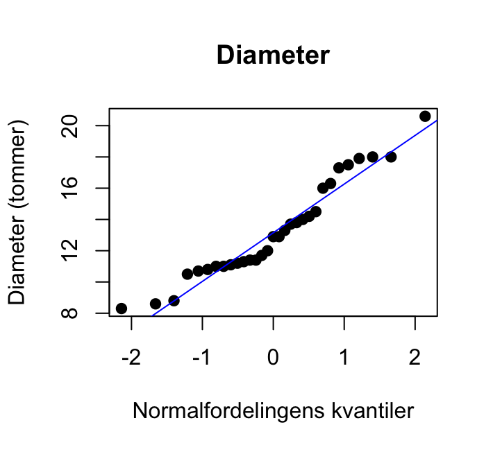
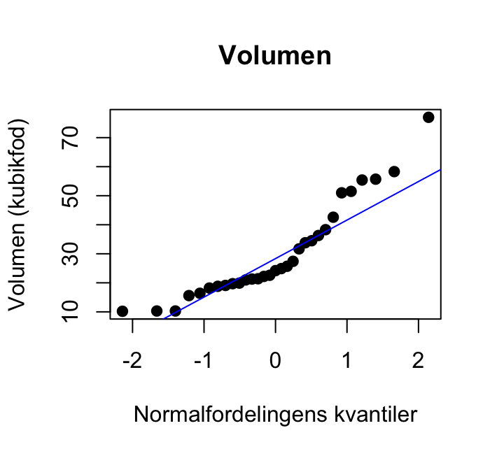
Vi vurderer Q–Q-plottene sammen med punktplottet ovenfor. Q–Q-plottene viser hver variabels fordeling, mens punktplottet viser, om sammenhængen er nogenlunde retlinjet. Ekstreme punkter og krumning kan gøre en enkelt korrelationskoefficient misvisende. Derfor skal vi se på figurerne, også når korrelationen er høj og p-værdien lille.
I vores data ligger især de største volumener over referencelinjen, og punktplottet viser tegn på krumning. Det giver anledning til at være varsom med testens normalitetsantagelse og med at beskrive hele sammenhængen med ét tal.
Simpel lineær regression forudsætter
- De enkelte træer er uafhængige observationer.
- Den forventede sammenhæng mellem diameter og volumen er lineær.
- Fejlene omkring linjen har nogenlunde samme spredning ved alle diametre.
- Residualerne er tilnærmelsesvis normalfordelte. Det undersøger vi med Q–Q-plottet nedenfor.
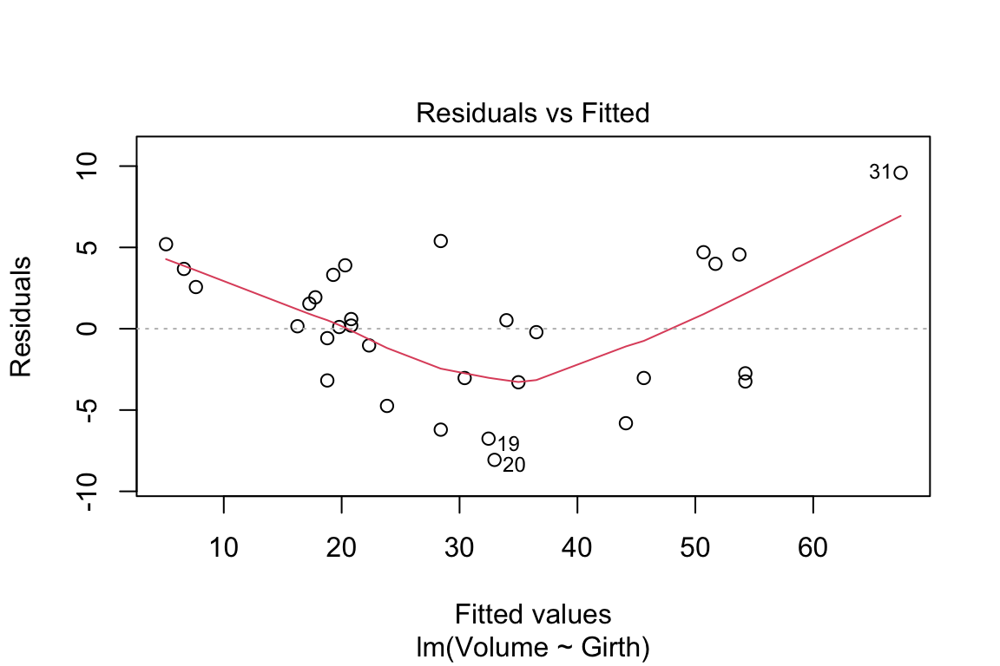
En systematisk bue tyder på, at en ret linje ikke beskriver sammenhængen tilstrækkeligt. I dette eksempel er der tegn på krumning, så den enkle model skal ses som en foreløbig beskrivelse, selvom \(R^2\) er højt. Vi vender tilbage til transformationer og andre modeller senere.
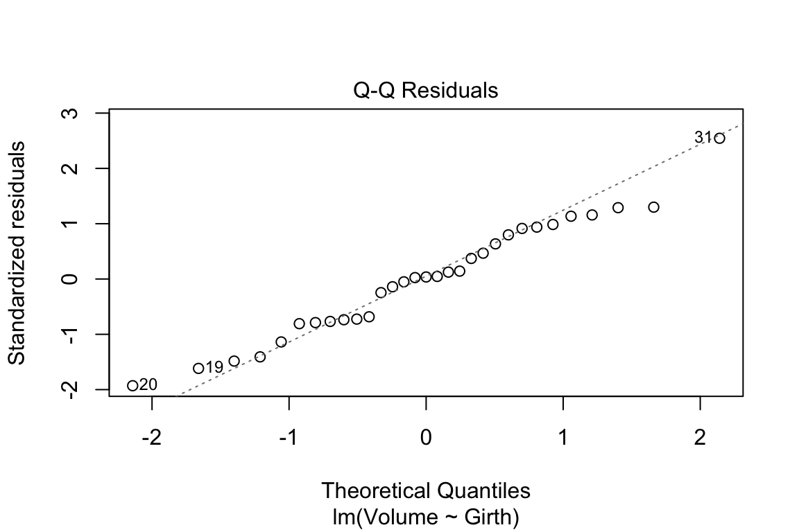
Det andet plot er et normal-Q-Q-plot af residualerne. Punkter tæt på den rette referencelinje er forenelige med nogenlunde normalfordelte fejl.
2.12.4 Opgave til næste undervisningsgang om R Markdown
Problem 9
Dataframen indeholder fiktive data for 24 laboratoriemus. Hver række repræsenterer én mus. kropsvaegt er kropsvægten i gram, og nyrevaegt er vægten af musens højre nyre i milligram. Kør koden for at oprette datasættet.
mus <- data.frame(
kropsvaegt = c(20.1, 21.0, 21.4, 22.2, 22.8, 23.4, 23.9, 24.3,
24.9, 25.4, 25.8, 26.2, 26.8, 27.3, 27.9, 28.4,
29.0, 29.5, 30.2, 30.8, 31.5, 32.0, 32.6, 33.4),
nyrevaegt = c(124, 143, 138, 129, 160, 151, 140, 162,
150, 139, 166, 162, 183, 160, 158, 186,
178, 176, 167, 193, 192, 183, 205, 194)
)a) Brug mus til at tegne kropsvægt på x-aksen og nyrevægt på y-aksen og beregne Pearsons korrelation.
b) Tilpas lm(nyrevaegt ~ kropsvaegt, data = mus). Find hældning og \(R^2\), og forklar begge med ord og de relevante enheder.
c) Se residualplottet. Hvorfor er et højt \(R^2\) ikke nok til at erklære modellen passende?
d) Kan en korrelation tæt på nul udelukke en kurvet sammenhæng?